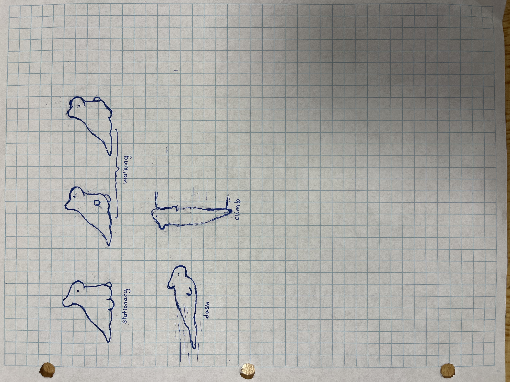
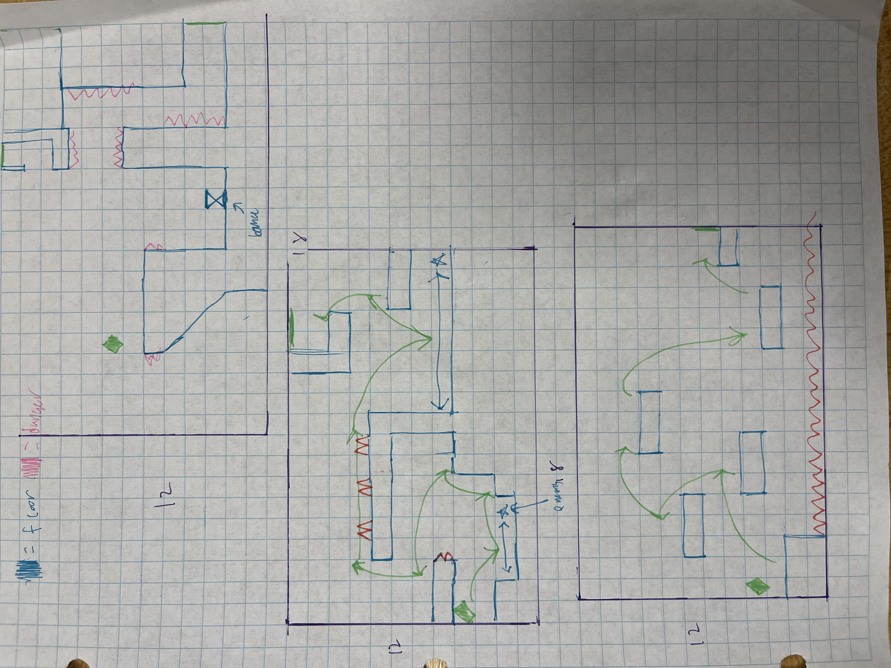
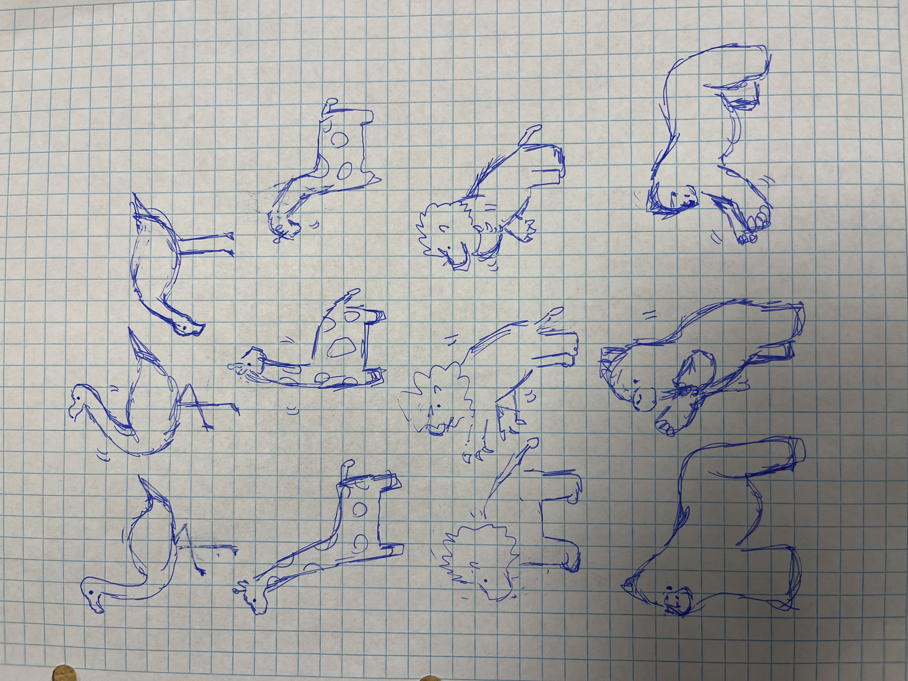

We started out with a basic character sketch to get an idea of what we wanted the atmopshere of our game to look like.
We then started to draw out levels based on where collision should take place. this will help us later on when we design our levels.
 
Day 1
Characters on the board (Player + animal)
Collision detection
Animal attacks player (EC)
Mug has health
10 hearts?
Animal has health
10 hearts?
Day 2
When animal loses all hearts:
Stop animal from attacking
Enable player to jump on animal to move to next level
Add level
loadLevel()
Different map
Different animal
Attacks in a different way
Takes more hearts
Day 3
Giraffe
Head smashes down
Takes 2 hearts
Kills in 5
If player loses all hearts:
Start from level 1
Score = 0
Hearts = 10
Save high score
Day 4
Move/jump animation (EC)
Dash/dash animation
Day 5
Any changes/fixes to bugs
Ballad of Mug is an accessible game to all players, deliberately choosing text, color, sound, visualization, and interactivity in regards to cognitive ability, players receiving feedback from the game, and players providing input to the game.
Feedback
The game’s gray-scale color palette allows color-blind users to experience the game like other players.
Everything on the screen is easy to see, allowing visually-impaired players to experience the game like other players.
Cognitive ability
The game has two modes of difficulty that adjusts how many hearts the animal takes away from the user each attack.
Input
It is possible to complete the game without dashing, enabling easy control of player movement.
With only four controls, players don’t have to burden themselves with memorizing a plethora of keybinds.
Jessica
Game design and character design
Will
Level design and programming
Michio
Game design and programming